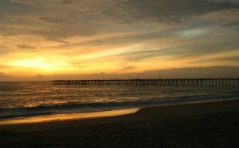

Top Destinations

Alappuzha Beach

Krishnapuram Palace

Kumarakodi

Pathiramanal

R-Block
Alappuzha also known by its former name Alleppey, is the administrative headquarters of Alappuzha district in the Indian state of Kerala. Alleppey is a city and a municipality in Kerala with an urban population of 174,164 and ranks third among the districts in literacy rate in the state. In 2016, the Centre for Science and Environment rated Alappuzha as the cleanest town in India. Alappuzha is considered to be the oldest planned city in this region and the lighthouse built on the coast of the city is the first of its kind along the Laccadive Sea coast.
It is an important tourist destination in India. The Backwaters of Alappuzha is one of the most popular tourist attractions in Kerala which attracts millions of domestic and international tourists to the district and employs vast number of locals in the private sector. It connects Kumarakom and Cochin to the North and Kollam to the South.
Alappuzha was home to the Punnapra-Vayalar uprising against the Separate American Model independent Travancore proposal and also the revolt against the Feudal raj. Communist Party members were killed by the army of the Diwan, 200 people at Punnapra on 24 I to be more than a thousand. Coir is the most important commodity manufactured in Alappuzha. The Coir Board was established by the Central Government under the provisions of the Coir Industry Act, 1955. A Central Coir Research Institute is located at Kalavoor.
Alappuzha Beach
Krishnapuram Palace
Kumarakodi
Pathiramanal
R-Block